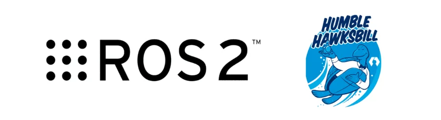
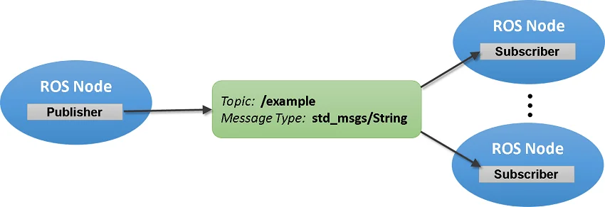
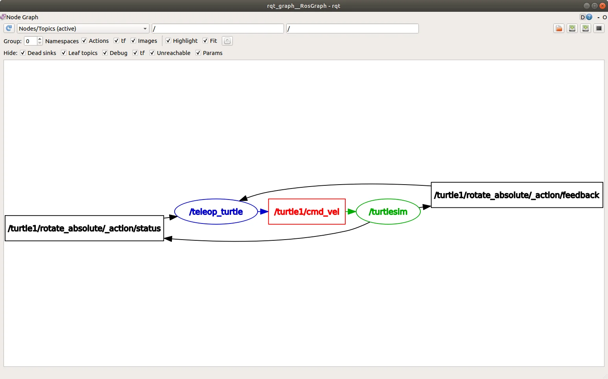

Projet 2 – Introduction à ROS2
1. Contexte et objectifs:
Ce projet introduit les mécanismes fondamentaux de publication et de souscription dans le framework ROS2 à travers un exemple pratique de génération et d’évaluation de données de capteurs.
L'objectif est de créer un package ROS2 nommé sensor_data_evaluation contenant :
- Un node publisher qui publie toutes les 0,5 secondes des données simulées (température, humidité, pression).
- Un node subscriber qui reçoit ces données et vérifie qu'elles sont dans les plages prédéfinies, en affichant les résultats dans le log.
- Un fichier de lancement pour exécuter l’ensemble des nodes.
2. Notion de base sur ROS2
a. ROS2(Robot Operating System 2)
ROS2 est un framework open source destiné à la robotique. Il permet de développer des systèmes distribués où plusieurs programmes indépendants, appelés nodes, peuvent communiquer entre eux. Grâce à cette modularité, il est possible de concevoir des architectures complexes où chaque partie a un rôle bien défini. L’organisation du code dans ROS2 repose sur des packages, qui regroupent les fichiers sources (C++ ou Python), les définitions de messages, les launch files et les dépendances nécessaires. ROS2 prend principalement en charge C++(via la bibliothèque rclcpp) et Python (via rclpy), permettant ainsi à la fois des implémentations performantes en C++ et des développements rapides en Python. La version ROS2 Humble est l’une des plus utilisées aujourd’hui.

Veuillez consultez la documentation officielle pour l'installation de ROS2 Humble.
b. Package
Un package est l'unité de base de l'organisation dans ROS2. Il regroupe tout ce qui est nécessaire à une fonctionnalité donnée: les fichiers sources (C++ ou Python), les launch files, les dépendances, la configuration du projet... Chaque package est autonome et réutilisable, ce qui facilite la modularité et le partage de code dans différents projets. Les packages sont généralement gérés via l'outil colcon build pour la compilation et l’installation.
c. Topic
Un topic est un canal de communication identifié par un nom (par exemple /camera/image ou /temperature). Les nodes publient ou s’abonnent à ces topics pour échanger des données. Un publisher envoie des messages sur un topic, et un ou plusieurs subscribers reçoivent ces messages. Les topics constituent donc la base de la communication dans ROS2.
d. Nodes(nœuds)
Un node est une unité de calcul dans ROS2, c’est-à-dire un programme autonome qui exécute une tâche spécifique. Certains nodes agissent comme publishers en envoyant des informations, d’autres comme subscribers en recevant et traitant ces informations, et certains cumulent les deux rôles. Cette organisation favorise la réutilisabilité et la modularité du système.
e. Messages
Les données échangées entre nodes passent par des messages. Ceux-ci définissent le format de l’information transmise. ROS2 fournit de nombreux types standards via la bibliothèque std_msgs, comme String(texte), Int32(entier), ou Bool(valeur logique). Il est également possible de définir ses propres types de messages personnalisés selon les besoins du projet.

Illustration d'un topic et des nodes avec un message.
f. Langages et bibliothèques
ROS2 prend en charge plusieurs langages de programmation, principalement C++ et Python.
- En C++, on utilise la bibliothèque rclcpp pour créer et gérer les nodes, publishers et subscribers, associée à std_msgs pour manipuler les messages standards.
- En Python, la bibliothèque équivalente est rclpy, qui offre les mêmes fonctionnalités avec une syntaxe plus simple, souvent utilisée pour le prototypage rapide.
NB: ROS2 permet aussi de mélanger des nodes en C++ et en Python dans une même architecture
g. Fichier de lancement(launcher)
Dans un projet ROS2 composé de plusieurs nodes, lancer chaque node séparément peut vite devenir fastidieux. Pour résoudre ce problème, ROS2 utilise les launch files(fichiers de lancement), généralement écrits en .xml ou .py. Ces fichiers décrivent quels nodes doivent être démarrés, avec quels paramètres et dans quel ordre. Ainsi, une seule commande permet de démarrer l'ensemble du système.
h. rqt
rqt est un framework graphique modulaire intégré à ROS2. Il propose une suite de plugins permettant la visualisation, l’analyse et le débogage des systèmes distribués. Parmi ses fonctionnalités, on retrouve :
- l'inspection en temps réel des topics, des publishers et des subscribers,
- l'affichage et la visualisation des messages échangés,
- le suivi de l’évolution de données sous forme de graphiques.

Exemple d'informations affichées dans l'interface rqt.
3. Structure du package et fonctionnement
Le package sensor_data_evaluation est composé de deux nodes:
- sensor_node_publisher
- sensor_node_subscriber
a. Création du workspace
user@user-VirtualBox:~$ cd Desktop
user@user-VirtualBox:~/Desktop$ mkdir -p workspace/src
b. Création du package
user@user-VirtualBox:~/Desktop$ cd workspace/src
user@user-VirtualBox:~/Desktop/workspace/src$ ros2 pkg create sensor_data_evaluation --build-type ament_cmake
c. Création des nodes cpp
Les nodes se trouvent dans le dossier workspace/src/sensor_data_evaluation/src. Ils ont été créés à l'aide de la commande touch et rendus exécutables avec chmod +x.
user@user-VirtualBox:~/Desktop/workspace/src$ cd sensor_data_evaluation/src
user@user-VirtualBox:~/Desktop/workspace/src/sensor_data_evaluation/src$ touch sensor_node_publisher.cpp
user@user-VirtualBox:~/Desktop/workspace/src/sensor_data_evaluation/src$ touch sensor_node_subscriber.cpp
user@user-VirtualBox:~/Desktop/workspace/src/sensor_data_evaluation/src$ chmod +x sensor_node_publisher.cpp
user@user-VirtualBox:~/Desktop/workspace/src/sensor_data_evaluation/src$ chmod +x sensor_node_subscriber.cpp
d. sensor_node_publisher
Ce node publie des données aléatoires toutes les 0.5 secondes sur le topic /sensor_data:
- Température : 15°C à 35°C
- Humidité : 30% à 70%
- Pression : 950 hPa à 1050 hPa
-
Fonctionnement:
- nbr_generator() génère un nombre entier aléatoire dans la plage donnée.
- Un timer appelle timer_callback() toutes les 0,5s.
- timer_callback() appelle nbr_generator() pour générer les trois valeurs, crée un message std_msgs::msg::String, l'affiche dans le log et le publie.
NB: Le node est lancé via rclcpp::spin(), ce qui permet d’exécuter le callback en continu.
sensor_node_publisher.cpp
#include <chrono>
#include <functional>
#include <memory>
#include <string>
#include <random>
#include "rclcpp/rclcpp.hpp"
#include "std_msgs/msg/string.hpp"
using namespace std::chrono_literals;
class SensorPublisher : public rclcpp::Node
{
private:
rclcpp::TimerBase::SharedPtr timer_;
rclcpp::Publisher<std_msgs::msg::String>::SharedPtr publisher_;
int temp, pression, hum;
// float temp, pression, hum;
void timer_callback()
{
temp = nbr_generator(15, 35);
hum = nbr_generator(30, 70);
pression = nbr_generator(950, 1050);
auto message = std_msgs::msg::String();
message.data = "T = " + std::to_string(temp) + "°C, H = " + std::to_string(hum) + "%, P = " + std::to_string(pression) + "hPa";
RCLCPP_INFO(this->get_logger(), "Publishing: '%s'", message.data.c_str());
publisher_->publish(message);
}
int nbr_generator(int min_value, int max_value){
static std::random_device rd;
static std::mt19937 gen(rd());
std::uniform_int_distribution<int> distrib(min_value, max_value);
return distrib(gen);
}
public:
SensorPublisher()
: Node("sensor_node_publisher")
{
publisher_ = this->create_publisher<std_msgs::msg::String>("sensor_data", 10);
timer_ = this->create_wall_timer(
500ms, std::bind(&SensorPublisher::timer_callback, this));
}
};
int main(int argc, char * argv[])
{
rclcpp::init(argc, argv);
rclcpp::spin(std::make_shared<SensorPublisher>());
rclcpp::shutdown();
return 0;
}
e. sensor_node_subscriber
Ce node écoute le topic /sensor_data et vérifie que les données sont dans la bonne plage.
- Température : 15°C à 35°C
- Humidité : 30% à 70%
- Pression : 950 hPa à 1050 hPa
-
Fonctionnement:
- La subscription appelle sensor_callback() à chaque message reçu.
- La fonction is_correct_value() analyse les données et retourne "correct values" ou "incorrect values" selon les plages.
- sensor_callback() affiche dans le log les données reçues et indique si elles sont correctes ou non, grâce à is_correct_value()
NB: Le node est lancé via rclcpp::spin(), ce qui permet de recevoir et traiter les messages en continu.
sensor_node_subscriber.cpp
#include <functional>
#include <memory>
#include <sstream>
#include "rclcpp/rclcpp.hpp"
#include "std_msgs/msg/string.hpp"
using std::placeholders::_1;
class SensorSubscriber : public rclcpp::Node
{
public:
SensorSubscriber()
: Node("sensor_node_subscriber")
{
subscription_ = this->create_subscription<std_msgs::msg::String>(
"sensor_data", 10, std::bind(&SensorSubscriber::sensor_callback, this, _1));
}
private:
void sensor_callback(const std_msgs::msg::String & msg) const
{
// std::string message = "Data received: " + msg.data + ": " + is_correct_value(msg.data);
// RCLCPP_INFO(this->get_logger(), "%s", message.c_str());
RCLCPP_INFO(this->get_logger(), "Data received: %s : %s", msg.data.c_str(), (is_correct_value(msg.data)).c_str());
}
rclcpp::Subscription<std_msgs::msg::String>::SharedPtr subscription_;
std::string is_correct_value(const std::string &txt) const{
std::stringstream ss(txt);
std::string buffer;
int T, H, P;
ss >> buffer >> buffer >> T >> buffer
>> buffer >> buffer >> H >> buffer
>> buffer >> buffer >> P >> buffer;
return (15 <= T && T <= 35 && 30 <= H && H <= 70 && 950 <= P && P <= 1050)? "correct values":"incorrect values";
}
};
int main(int argc, char * argv[])
{
rclcpp::init(argc, argv);
rclcpp::spin(std::make_shared<SensorSubscriber>());
rclcpp::shutdown();
return 0;
}
f. CMakeLists.txt
Ce fichier permet de créer les exécutables pour les nodes et de configurer les dépendances du package ROS2. Il est généré automatiquement lors de la création du package avec des valeurs par défaut.
-
Points clés:
- Recherche des dépendances nécessaires: ament_cmake, rclcpp et std_msgs.
- Création des exécutables sensor_node_publisher et sensor_node_subscriber et liaison aux bibliothèques ROS2.
- Installation les exécutables dans le dossier lib/${PROJECT_NAME}.
- Configuration des tests et linters si BUILD_TESTING est activé.
- Termine par ament_package() pour indiquer que c'est un package ROS2 valide.
CMakeLists.txt
cmake_minimum_required(VERSION 3.8)
project(sensor_data_evaluation)
if(CMAKE_COMPILER_IS_GNUCXX OR CMAKE_CXX_COMPILER_ID MATCHES "Clang")
add_compile_options(-Wall -Wextra -Wpedantic)
endif()
# find dependencies
find_package(ament_cmake REQUIRED)
find_package(rclcpp REQUIRED)
find_package(std_msgs REQUIRED)
# add the executable
add_executable(sensor_node_publisher src/sensor_node_publisher.cpp)
target_link_libraries(sensor_node_publisher PUBLIC rclcpp::rclcpp ${std_msgs_TARGETS})
add_executable(sensor_node_subscriber src/sensor_node_subscriber.cpp)
target_link_libraries(sensor_node_subscriber PUBLIC rclcpp::rclcpp ${std_msgs_TARGETS})
install(TARGETS
sensor_node_publisher
sensor_node_subscriber
DESTINATION lib/${PROJECT_NAME})
if(BUILD_TESTING)
find_package(ament_lint_auto REQUIRED)
# the following line skips the linter which checks for copyrights
# comment the line when a copyright and license is added to all source files
set(ament_cmake_copyright_FOUND TRUE)
# the following line skips cpplint (only works in a git repo)
# comment the line when this package is in a git repo and when
# a copyright and license is added to all source files
set(ament_cmake_cpplint_FOUND TRUE)
ament_lint_auto_find_test_dependencies()
endif()
ament_package()
g. package.xml
Ce fichier permet d'inclure et déclarer toutes les ressources nécessaires pour le package ROS2. Il contient les informations essentielles sur le package, ses dépendances et ses outils de build. Il est aussi généré automatiquement à la création du package avec des valeurs par défaut.
-
Points clés:
- Déclaration du nom, de la version, de la description, du mainteneur et de la licence du package.
- Indique les dépendances de build et d’exécutionber: ament_cmake, rclcpp, std_msgs ros2launch.
- Spécification des dépendances pour les tests: ament_lint_auto et ament_lint_common.
- Contient la section <export> pour préciser le type de build (ament_cmake pour les packages C++) utilisé par ROS2.
package.xml
<?xml version="1.0"?>
<?xml-model href="http://download.ros.org/schema/package_format3.xsd" schematypens="http://www.w3.org/2001/XMLSchema"?>
<package format="3">
<name>sensor_data_evaluation</name>
<version>0.0.0</version>
<description>Sending and receiving data</description>
<maintainer email="user@todo.todo">user</maintainer>
<license>TODO: License declaration</license>
<buildtool_depend>ament_cmake</buildtool_depend>
<depend>rclcpp</depend>
<depend>std_msgs</depend>
<exec_depend>ros2launch</exec_depend>
<test_depend>ament_lint_auto</test_depend>
<test_depend>ament_lint_common</test_depend>
<export>
<build_type>ament_cmake</build_type>
</export>
</package>
h. Le fichier de lancement
Ce fichier lance simultanément les nodes du package ROS2. Nous avons choisi le format XML pour sa simplicité et sa facilité de prise en main.
Il se trouve dans: workspace/install/sensor_data_evaluation/share/sensor_data_evaluation
sensor_data_eval_launch.xml
<?xml version="1.0" encoding="UTF-8"?>
<launch>
<node pkg="sensor_data_evaluation" exec="sensor_node_publisher"/>
<node pkg="sensor_data_evaluation" exec="sensor_node_subscriber"/>
</launch>
4. Tests réalisés
Compilation du package par colcon et lancement des nodes via le launcher:
user@user-VirtualBox:~$ cd Desktop/workspace
user@user-VirtualBox:~/Desktop/workspace$ colcon build --symlink-install
user@user-VirtualBox:~/Desktop/workspace$ source install/setup.bash
user@user-VirtualBox:~/Desktop/workspace$ ros2 launch sensor_data_evaluation sensor_data_eval_launch.xml
5. Limites et perspectives
En utilisant un launcher.xml, les deux nodes s'exécutent sur le même terminal ce qui rend difficile la lecture.
Pour ne pas encombrer davantage l'affichage, nous avons opté pour des données entières et une notification simple pour la vérification des plages des données.
Pour résoudre ce problème, d'autres formats alternatifs existent pour le fichier de lancement tel que le format .py.
6. Conclusion
Ce projet a permis de mettre en œuvre de manière concrète les mécanismes de publication et de souscription dans ROS2 à travers un exemple simple mais représentatif d’un système de capteurs. En simulant des données environnementales (température, humidité et pression) et en les évaluant en temps réel, nous avons pu répondre au cahier de charge.
Ce projet représente une étape clé dans l’apprentissage du framework ROS2 et de son écosystème autour de la robotique distribuée.
7. Bonus
La vidéo ci-dessous illustre la connexion entre un node publisher exécuté sur une machine A et un node subscriber exécuté sur une machine B, montrant ainsi la communication inter-machines via ROS2.
-
NB:
- Il est recommandé d'installer la même distribution de ROS2 sur chaque machine.
- Il faut aussi vérifier qu’aucun pare-feu ne bloque la communication et que toutes les machines soient connectées au même réseau, avec tous les packages nécessaires installés.